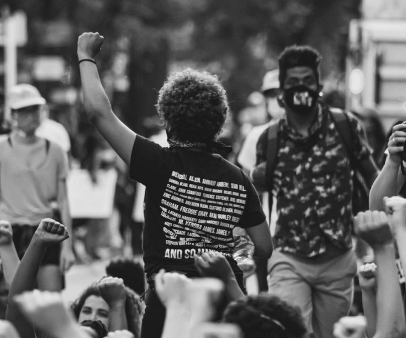

I’m an investigative journalist with over two decades of experience.
I’ve covered both Milan’s fashion week and the U.S. primaries in the
same year. Above all, I believe that fair and free press is fundamental
to a healthy society – the core ideal behind my work. I offer
professional, unbiased, and timely articles, along with cited sources,
and the highest regard for journalistic integrity you can find.
MY STRENGHTS
Ambition Precision Assertive
I'm passionate about what I do, and never do I believe it's pointless to do something if I'm not afraid to ask the difficult questions
and have the difficult conversations you're not going to do it well. things half-heartedly.

MY EXPERIENCE
Political Columnist @ World Politics
Digest
Jan 2018 - Present
I write political opinion pieces and reports on the U.S.’s most recent political
events. Mygoal was and is to bring articles and news without partisan bias
while offering insight and analysis.
On-Site Journalist @ Italian Fashion
BTS
I walked the red carpet, spoke with designers, and provided in-depth insights
on each participant’s collections and their inspirations for the multiple fashion
events taking place across Italy.